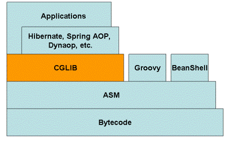

CGLIB¶
什么是CGLIB¶
CGLIB（Code Generator Library）是一个强大的、高性能的代码生成库。其被广泛应用于AOP框架（Spring、dynaop）中，用以提供方法拦截操作。 Hibernate作为一个比较受欢迎的ORM框架，同样使用CGLIB来代理单端（多对一和一对一）关联（延迟提取集合使用的另一种机制）。
为什么使用CGLIB¶
CGLIB代理主要通过对字节码的操作，为对象引入间接级别，以控制对象的访问。我们知道Java中有一个动态代理也是做这个事情的，那我们为什么不直接使用Java动态代理，而要使用CGLIB呢？ 答案是CGLIB相比于JDK动态代理更加强大，JDK动态代理虽然简单易用，但是其有一个致命缺陷是，只能对接口进行代理。如果要代理的类为一个普通类、没有接口，那么Java动态代理就没法使用了
CGLIB组成结构¶

CGLIB底层使用了ASM（一个短小精悍的字节码操作框架）来操作字节码生成新的类。除了CGLIB库外，脚本语言（如Groovy何BeanShell）也使用ASM生成字节码。 ASM使用类似SAX的解析器来实现高性能。我们不鼓励直接使用ASM，因为它需要对Java字节码的格式足够的了解
一个示例¶
<dependency>
<groupId>cglib</groupId>
<artifactId>cglib</artifactId>
<version>2.2.2</version>
</dependency>
public class HelloImpl implements IHello {
@Override
public void sayHello() {
System.out.println("hello");
}
}
public class CgLibClient {
public static void main(String[] args) {
Enhancer enhancer = new Enhancer();
enhancer.setSuperclass(HelloImpl.class);
enhancer.setCallback(new MethodInterceptor() {
@Override
public Object intercept(Object o, Method method, Object[] args, MethodProxy methodProxy) throws Throwable {
System.out.println("before method run...");
Object result = methodProxy.invokeSuper(o, args);
System.out.println("after method run...");
return result;
}
});
HelloImpl hello = (HelloImpl) enhancer.create();
hello.sayHello();
}
}
常用的API¶
Enhancer¶
Enhancer可能是CGLIB中最常用的一个类，和Java1.3动态代理中引入的Proxy类差不多。和Proxy不同的是，Enhancer既能够代理普通的class，也能够代理接口。 Enhancer创建一个被代理对象的子类并且拦截所有的方法调用（包括从Object中继承的toString和hashCode方法）。 Enhancer不能够拦截final方法，例如Object.getClass()方法，这是由于Java final方法语义决定的。基于同样的道理，Enhancer也不能对fianl类进行代理操作。 这也是Hibernate为什么不能持久化final class的原因。
@Test
public void testFixedValue(){
Enhancer enhancer = new Enhancer();
enhancer.setSuperclass(SampleClass.class);
enhancer.setCallback(new FixedValue() {
@Override
public Object loadObject() throws Exception {
return "Hello cglib";
}
});
SampleClass proxy = (SampleClass) enhancer.create();
System.out.println(proxy.test(null)); //拦截test，输出Hello cglib
System.out.println("=========");
System.out.println(proxy.toString());
System.out.println("=========");
System.out.println(proxy.getClass());
System.out.println("=========");
System.out.println(proxy.hashCode());
}
Hello cglib
=========
Hello cglib
=========
class cglib.SampleClass\(\(EnhancerByCGLIB\)\)a9f5b392
=========
java.lang.ClassCastException: java.lang.String cannot be cast to java.lang.Number
上述代码中，FixedValue用来对所有拦截的方法返回相同的值，从输出我们可以看出来，Enhancer对非final方法test()、toString()、hashCode()进行了拦截，没有对getClass进行拦截。 由于hashCode()方法需要返回一个Number，但是我们返回的是一个String，这解释了上面的程序中为什么会抛出异常。
Enhancer.setSuperclass用来设置父类型，从toString方法可以看出，使用CGLIB生成的类为被代理类的一个子类，形如：SampleClass\(\(EnhancerByCGLIB\)\)e3ea9b7
Enhancer.create(Object…)方法是用来创建增强对象的，其提供了很多不同参数的方法用来匹配被增强类的不同构造方法。 （虽然类的构造放法只是Java字节码层面的函数，但是Enhancer却不能对其进行操作。Enhancer同样不能操作static或者final类）。 我们也可以先使用Enhancer.createClass()来创建字节码(.class)，然后用字节码动态的生成增强后的对象。
可以使用一个InvocationHandler作为回调，使用invoke方法来替换直接访问类的方法，但是你必须注意死循环。 因为invoke中调用的任何原代理类方法，均会重新代理到invoke方法中。
@Test
public void testInvocationHandler() throws Exception {
Enhancer enhancer = new Enhancer();
enhancer.setSuperclass(SampleClass.class);
enhancer.setCallback(new InvocationHandler() {
@Override
public Object invoke(Object proxy, Method method, Object[] args) throws Throwable {
if (method.getDeclaringClass() != Object.class && method.getReturnType() == String.class) {
return "hello cglib";
} else {
throw new RuntimeException("Do not know what to do");
}
}
});
SampleClass proxy = (SampleClass) enhancer.create();
System.out.println(proxy.test(null));
// Assert.assertEquals("hello cglib", proxy.test(null));
Assert.assertNotEquals("Hello cglib", proxy.toString());
}
u
有些时候我们可能只想对特定的方法进行拦截，对其他的方法直接放行，不做任何操作，使用Enhancer处理这种需求同样很简单,只需要一个CallbackFilter即可：
@Test
public void testCallbackFilter() throws Exception {
Enhancer enhancer = new Enhancer();
CallbackHelper callbackHelper = new CallbackHelper(SampleClass.class, new Class[0]) {
@Override
protected Object getCallback(Method method) {
if (method.getDeclaringClass() != Object.class && method.getReturnType() == String.class) {
return new FixedValue() {
@Override
public Object loadObject() throws Exception {
return "Hello cglib";
}
};
} else {
return NoOp.INSTANCE;
}
}
};
enhancer.setSuperclass(SampleClass.class);
enhancer.setCallbackFilter(callbackHelper);
enhancer.setCallbacks(callbackHelper.getCallbacks());
SampleClass proxy = (SampleClass) enhancer.create();
Assert.assertEquals("Hello cglib", proxy.test(null));
Assert.assertNotEquals("Hello cglib", proxy.toString());
System.out.println(proxy.hashCode());
}
2080166188
ImmutableBean¶
通过名字就可以知道，不可变的Bean。ImmutableBean允许创建一个原来对象的包装类，这个包装类是不可变的，任何改变底层对象的包装类操作都会抛出IllegalStateException。但是我们可以通过直接操作底层对象来改变包装类对象。这有点类似于Guava中的不可变视图
为了对ImmutableBean进行测试，这里需要再引入一个bean
public class SampleBean {
private String value;
public SampleBean() {
}
public SampleBean(String value) {
this.value = value;
}
public String getValue() {
return value;
}
public void setValue(String value) {
this.value = value;
}
}
然后编写测试类如下：
@Test(expected = IllegalStateException.class)
public void testImmutableBean() throws Exception{
SampleBean bean = new SampleBean();
bean.setValue("Hello world");
SampleBean immutableBean = (SampleBean) ImmutableBean.create(bean); //创建不可变类
Assert.assertEquals("Hello world",immutableBean.getValue());
bean.setValue("Hello world, again"); //可以通过底层对象来进行修改
Assert.assertEquals("Hello world, again", immutableBean.getValue());
immutableBean.setValue("Hello cglib"); //直接修改将throw exception
}
BeanGenerator¶
cglib提供的一个操作bean的工具，使用它能够在运行时动态的创建一个bean。
@Test
public void testBeanGenerator() throws Exception{
BeanGenerator beanGenerator = new BeanGenerator();
beanGenerator.addProperty("value",String.class);
Object myBean = beanGenerator.create();
Method setter = myBean.getClass().getMethod("setValue",String.class);
setter.invoke(myBean,"Hello cglib");
Method getter = myBean.getClass().getMethod("getValue");
Assert.assertEquals("Hello cglib",getter.invoke(myBean));
}
BeanCopier¶
cglib提供的能够从一个bean复制到另一个bean中，而且其还提供了一个转换器，用来在转换的时候对bean的属性进行操作。
@Test
public void testBeanCopier() throws Exception{
BeanCopier copier = BeanCopier.create(SampleBean.class, OtherSampleBean.class, false);//设置为true，则使用converter
SampleBean myBean = new SampleBean();
myBean.setValue("Hello cglib");
OtherSampleBean otherBean = new OtherSampleBean();
copier.copy(myBean, otherBean, null); //设置为true，则传入converter指明怎么进行转换
Assert.assertEquals("Hello cglib", otherBean.getValue());
}
BulkBean¶
相比于BeanCopier，BulkBean将copy的动作拆分为getPropertyValues和setPropertyValues两个方法，允许自定义处理属性
@Test
public void testBulkBean() throws Exception {
BulkBean bulkBean = BulkBean.create(SampleBean.class,
new String[]{"getValue"},
new String[]{"setValue"},
new Class[]{String.class});
SampleBean bean = new SampleBean();
bean.setValue("Hello world");
Object[] propertyValues = bulkBean.getPropertyValues(bean);
Assert.assertEquals(1, bulkBean.getPropertyValues(bean).length);
Assert.assertEquals("Hello world", bulkBean.getPropertyValues(bean)[0]);
bulkBean.setPropertyValues(bean, new Object[]{"Hello cglib"});
Assert.assertEquals("Hello cglib", bean.getValue());
}
使用注意： 1. 避免每次进行BulkBean.create创建对象，一般将其声明为static的 2. 应用场景：针对特定属性的get,set操作，一般适用通过xml配置注入和注出的属性，运行时才确定处理的Source,Target类，只需要关注属性名即可。
BeanMap¶
BeanMap类实现了Java Map，将一个bean对象中的所有属性转换为一个String-to-Obejct的Java Map
@Test
public void testBeanMap() throws Exception {
BeanGenerator generator = new BeanGenerator();
generator.addProperty("username", String.class);
generator.addProperty("password", String.class);
Object bean = generator.create();
Method setUserName = bean.getClass().getMethod("setUsername", String.class);
Method setPassword = bean.getClass().getMethod("setPassword", String.class);
setUserName.invoke(bean, "admin");
setPassword.invoke(bean, "password");
BeanMap map = BeanMap.create(bean);
Assert.assertEquals("admin", map.get("username"));
Assert.assertEquals("password", map.get("password"));
}
keyFactory¶
keyFactory类用来动态生成接口的实例，接口需要只包含一个newInstance方法，返回一个Object。keyFactory为构造出来的实例动态生成了Object.equals和Object.hashCode方法，能够确保相同的参数构造出的实例为单例的。
我们首先构造一个满足条件的接口，然后进行测试 @Test
public void testKeyFactory() throws Exception {
SampleKeyFactory keyFactory = (SampleKeyFactory) KeyFactory.create(SampleKeyFactory.class);
Object key = keyFactory.newInstance("foo", 42);
Object key1 = keyFactory.newInstance("foo", 42);
Assert.assertEquals(key, key1);//测试参数相同，结果是否相等
}
Mixin(混合)¶
Mixin能够让我们将多个对象整合到一个对象中去，前提是这些对象必须是接口的实现。可能这样说比较晦涩，以代码为例：
@Test
public void testMixin() throws Exception {
Mixin mixin = Mixin.create(new Class[]{Interface1.class, Interface2.class,
MixinInterface.class}, new Object[]{new Class1(), new Class2()});
MixinInterface mixinDelegate = (MixinInterface) mixin;
Assert.assertEquals("first", mixinDelegate.first());
Assert.assertEquals("second", mixinDelegate.second());
}
Mixin类比较尴尬，因为他要求Minix的类（例如MixinInterface）实现一些接口。既然被Minix的类已经实现了相应的接口，那么我就直接可以通过纯Java的方式实现，没有必要使用Minix类。
StringSwitcher¶
用来模拟一个String到int类型的Map类型。如果在Java7以后的版本中，类似一个switch语句。
@Test
public void testStringSwitcher() throws Exception{
String[] strings = new String[]{"one", "two"};
int[] values = new int[]{10,20};
StringSwitcher stringSwitcher = StringSwitcher.create(strings,values,true);
assertEquals(10, stringSwitcher.intValue("one"));
assertEquals(20, stringSwitcher.intValue("two"));
assertEquals(-1, stringSwitcher.intValue("three"));
}
InterfaceMaker¶
正如名字所言，Interface Maker用来创建一个新的Interface
@Test
public void testInterfaceMarker() throws Exception{
Signature signature = new Signature("foo", Type.DOUBLE_TYPE, new Type[]{Type.INT_TYPE});
InterfaceMaker interfaceMaker = new InterfaceMaker();
interfaceMaker.add(signature, new Type[0]);
Class iface = interfaceMaker.create();
assertEquals(1, iface.getMethods().length);
assertEquals("foo", iface.getMethods()[0].getName());
assertEquals(double.class, iface.getMethods()[0].getReturnType());
}
Method delegate¶
MethodDelegate主要用来对方法进行代理
@Test
public void testMethodDelegate() throws Exception {
SampleBean bean = new SampleBean();
bean.setValue("Hello cglib");
BeanDelegate delegate = (BeanDelegate) MethodDelegate.create(bean, "getValue", BeanDelegate.class);
Assert.assertEquals("Hello cglib", delegate.getValueFromDelegate());
}
关于Method.create的参数说明：¶
- 第二个参数为即将被代理的方法
- 第一个参数必须是一个无参数构造的bean。因此MethodDelegate.create并不是你想象的那么有用
- 第三个参数为只含有一个方法的接口。当这个接口中的方法被调用的时候，将会调用第一个参数所指向bean的第二个参数方法
缺点¶
- 为每一个代理类创建了一个新的类，这样可能会占用大量的永久代堆内存
- 你不能代理需要参数的方法
- 如果你定义的接口中的方法需要参数，那么代理将不会工作，并且也不会抛出异常；如果你的接口中方法需要其他的返回类型，那么将抛出IllegalArgumentException
Constructor delegate¶
为了对构造函数进行代理，我们需要一个接口，这个接口只含有一个Object newInstance(…)方法，用来调用相应的构造函数
FastClass¶
顾明思义，FastClass就是对Class对象进行特定的处理，比如通过数组保存method引用，因此FastClass引出了一个index下标的新概念，比如getIndex(String name, Class[] parameterTypes)就是以前的获取method的方法。通过数组存储method,constructor等class信息，从而将原先的反射调用，转化为class.index的直接调用，从而体现所谓的FastClass。
@Test
public void testFastClass() throws Exception {
FastClass fastClass = FastClass.create(SampleBean.class);
FastMethod fastMethod = fastClass.getMethod("getValue", new Class[0]);
SampleBean bean = new SampleBean();
bean.setValue("Hello world");
Assert.assertEquals("Hello world", fastMethod.invoke(bean, new Object[0]));
}
注意¶
由于CGLIB的大部分类是直接对Java字节码进行操作，这样生成的类会在Java的永久堆中。如果动态代理操作过多，容易造成永久堆满，触发OutOfMemory异常。
CGLIB 动态代理介绍¶
什么是 CGLIB？¶
CGLIB是一个功能强大，高性能的代码生成包。它为没有实现接口的类提供代理，为JDK的动态代理提供了很好的补充。
通常可以使用Java的动态代理创建代理，但当要代理的类没有实现接口或者为了更好的性能，CGLIB 是一个好的选择。
CGLIB 的原理¶
CGLIB 原理：动态生成一个要代理类的子类，子类重写要代理的类的所有不是 final 的方法。在子类中采用方法拦截的技术拦截所有父类方法的调用，顺势织入横切逻辑。
CGLIB 底层：采用ASM字节码生成框架，使用字节码技术生成代理类，比使用 Java 反射效率要高。
CGLIB 动态代理使用¶
CGLIB 动态代理步骤：
引入 CGLIB 依赖 定义一个被代理类 定义一个拦截器并实现接口 MethodInterceptor 代理工厂类 通过代理对象调用方法 引入依赖：cglib-nodep-2.2.jar
Student：被代理类¶
CglibProxy：拦截器¶
public class CglibProxy implements MethodInterceptor {
/**
* @param o: 代理对象
* @param method: 被代理方法
* @param params: 方法入参
* @param methodProxy: CGLIB方法
**/
@Override
public Object intercept(Object o, Method method, Object[] params, MethodProxy methodProxy) throws Throwable {
System.out.println("【增强方法】代理对象正在执行的方法：" + method.getName());
Object result = methodProxy.invokeSuper(o, params);
return result;
}
}
CglibProxyFactory：代理工厂类
public class CglibProxyFactory {
public static Object creatCglibProxyObj(Class<?> clazz) {
Enhancer enhancer = new Enhancer();
// 为加强器指定要代理的业务类（即为下面生成的代理类指定父类）
enhancer.setSuperclass(clazz);
// 设置回调：对于代理类上所有方法的调用，都会调用CallBack，而Callback则需要实现intercept()方法
enhancer.setCallback(new CglibProxy());
return enhancer.create();
}
}
测试：
public class Test {
public static void main(String[] args) {
Student studentProxy = (Student)CglibProxyFactory.creatCglibProxyObj(Student.class);
studentProxy.handOut();
}
}
运行后，依旧可以增强原功能。
- CGLIB 动态代理原理 上文中的是通过 enhancer.create 方法调用获取的代理对象，以此为入口深入探究一下 CGLIB 动态代理的实现原理。
Enhancer#create()：
public Object create() {
this.classOnly = false;
this.argumentTypes = null;
return this.createHelper();
}
Enhancer#createHelper()：调用父类的 create() 方法
private Object createHelper() {
//...
return super.create(KEY_FACTORY.newInstance(this.superclass != null ? this.superclass.getName() : null, ReflectUtils.getNames(this.interfaces),
this.filter, this.callbackTypes, this.useFactory, this.interceptDuringConstruction, this.serialVersionUID));
}
AbstractClassGenerator#create()：
protected Object create(Object key) {
try {
//...
if (gen == null) {
// 1.生成代理类
byte[] b = this.strategy.generate(this);
// 2.获取代理类名称
String className = ClassNameReader.getClassName(new ClassReader(b));
this.getClassNameCache(loader).add(className);
gen = ReflectUtils.defineClass(className, b, loader);
}
if (this.useCache) {
((Map)cache2).put(key, new WeakReference(gen));
}
var24 = this.firstInstance(gen);
} finally {
CURRENT.set(save);
}
return var24;
}
//...
}
DefaultGeneratorStrategy#generate()：生成代理类
public byte[] generate(ClassGenerator cg) throws Exception {
ClassWriter cw = this.getClassWriter();
this.transform(cg).generateClass(cw);
return this.transform(cw.toByteArray());
DebuggingClassWriter#toByteArray()：
public byte[] toByteArray() {
return (byte[])((byte[])AccessController.doPrivileged(new PrivilegedAction() {
public Object run() {
byte[] b = DebuggingClassWriter.super.toByteArray();
if (DebuggingClassWriter.debugLocation != null) {
String dirs = DebuggingClassWriter.this.className.replace('.', File.separatorChar);
try {
// 如果 DebuggingClassWriter.DEBUG_LOCATION_PROPERTY 系统属性被设置，则输出代理类到指定目录
(new File(DebuggingClassWriter.debugLocation + File.separatorChar + dirs)).getParentFile().mkdirs();
File file = new File(new File(DebuggingClassWriter.debugLocation), dirs + ".class");
BufferedOutputStream out = new BufferedOutputStream(new FileOutputStream(file));
try {
out.write(b);
} finally {
out.close();
}
if (DebuggingClassWriter.traceEnabled) {
file = new File(new File(DebuggingClassWriter.debugLocation), dirs + ".asm");
out = new BufferedOutputStream(new FileOutputStream(file));
try {
ClassReader cr = new ClassReader(b);
PrintWriter pw = new PrintWriter(new OutputStreamWriter(out));
TraceClassVisitor tcv = new TraceClassVisitor((ClassVisitor)null, pw);
cr.accept(tcv, 0);
pw.flush();
} finally {
out.close();
}
}
} catch (IOException var17) {
throw new CodeGenerationException(var17);
}
}
return b;
}
}));
}
生成 CGLIB 字节码文件
由上文可知，把 DebuggingClassWriter.DEBUG_LOCATION_PROPERTY（也就是 cglib.debugLocation）系统属性设置为当前项目的根目录，即可保存 CGLIB 生成的代理类到当前项目根目录下。
设置系统属性配置：
public static void main(String[] args) {
System.setProperty(DebuggingClassWriter.DEBUG_LOCATION_PROPERTY, System.getProperty("user.dir"));
Student studentProxy = (Student)CglibProxyFactory.creatCglibProxyObj(Student.class);
studentProxy.handOut();
}
public class Student$$EnhancerByCGLIB$$723acbd8 extends Student implements Factory {
private boolean CGLIB$BOUND;
private static final ThreadLocal CGLIB$THREAD_CALLBACKS;
private static final Callback[] CGLIB$STATIC_CALLBACKS;
private MethodInterceptor CGLIB$CALLBACK_0;
private static final Method CGLIB$handOut$0$Method;
private static final MethodProxy CGLIB$handOut$0$Proxy;
//...
static void CGLIB$STATICHOOK1() {
CGLIB$THREAD_CALLBACKS = new ThreadLocal();
CGLIB$emptyArgs = new Object[0];
Class var0 = Class.forName("com.zzc.proxy.cglib.Student$$EnhancerByCGLIB$$723acbd8");
Class var1;
Method[] var10000 = ReflectUtils.findMethods(new String[]{"finalize", "()V", "equals", "(Ljava/lang/Object;)Z", "toString", "()Ljava/lang/String;", "hashCode", "()I", "clone", "()Ljava/lang/Object;"}, (var1 = Class.forName("java.lang.Object")).getDeclaredMethods());
CGLIB$handOut$0$Method = ReflectUtils.findMethods(new String[]{"handOut", "()V"}, (var1 = Class.forName("com.zzc.proxy.cglib.Student")).getDeclaredMethods())[0];
CGLIB$handOut$0$Proxy = MethodProxy.create(var1, var0, "()V", "handOut", "CGLIB$handOut$0");
//...
}
final void CGLIB$handOut$0() {
super.handOut();
}
public final void handOut() {
MethodInterceptor var10000 = this.CGLIB$CALLBACK_0;
if (var10000 == null) {
CGLIB$BIND_CALLBACKS(this);
var10000 = this.CGLIB$CALLBACK_0;
}
if (var10000 != null) {
var10000.intercept(this, CGLIB$handOut$0$Method, CGLIB$emptyArgs, CGLIB$handOut$0$Proxy);
} else {
super.handOut();
}
}
//...
static {
CGLIB$STATICHOOK1();
}
说明：¶
-
生成的动态代理类继承了父类 Student，并且实现了接口 Factory
-
动态代理类持有 MethodInterceptor
-
动态代理类会重写父类 Student 的非 final、private 方法；也会构建自己的方法（cglib 方法），构建方式：CGLIB”+“$父类方法
-
cglib 方法的方法体：super.方法名，直接调用父类；重写方法：它会调用拦截器中的 intercept() 方法
-
methodProxy.invokeSuper() 方法会调用动态代理类中的 cglib 方法；methodProxy.invoke() 方法会调用动态代理类中的重写方法
## CGLIB 动态代理原理：
外界调用了方法后（studentProxy.handOut();），由于父类 Student 被子类（动态代理类）给继承了（已经重写了 handOut()），所以，会调用动态代理类中的 handOut() 方法。而在这个重写的方法中，又会去调用 MethodInterceptor#intercept() 方法。在这个方法中，功能增强后，再去调用动态代理中的 cglib 方法，而此方法又会去调用父类中的方法。
JDK 动态代理和 CGLIB 动态代理比较¶
区别¶
总结一下两者的区别吧：
JDK 动态代理基于接口，CGLIB 动态代理基于类。因为 JDK 动态代理生成的代理类需要继承 java.lang.reflect.Proxy，所以，只能基于接口；CGLIB 动态代理是根据类创建此类的子类，所以，此类不能被 final 修饰 JDK 和 CGLIB 动态代理都是在运行期生成字节码。而 JDK 是直接写 Class 字节码；而 CGLIB 使用 ASM 框架写 Class 字节码（不鼓励直接使用ASM，因为它要求你必须对 JVM 内部结构包括 class 文件的格式和指令集都很熟悉） JDK 通过反射调用方法，CGLIB 通过 FastClass 机制（下一篇再将）直接调用方法。所以，CGLIB 执行的效率较高 JDK 动态代理是利用反射机制生成一个实现代理接口的类（这个类看不见摸不着，在 jvm 内存中有这个类），在调用具体方法前调用 InvokeHandler来处理。核心是实现 InvocationHandler接口，使用 invoke()方法进行面向切面的处理，调用相应的通知；CGLIB 动态代理是利用 asm 开源包，对代理对象类的 class 文件加载进来，通过修改其字节码生成子类来处理。核心是实现 MethodInterceptor 接口，使用 intercept() 方法进行面向切面的处理，调用相应的通知。
优缺点¶
劣势：
JDK：JDK的动态代理机制只能代理实现了接口的类，而不能实现接口的类就不能实现JDK的动态代理 CGLIB：CGLIB 的原理是对指定的目标类生成一个子类，并覆盖其中方法实现增强，但因为采用的是继承，所以不能对 final 修饰的类进行代理 优势：
JDK：最小化依赖关系，减少依赖意味着简化开发和维护，JDK本身的支持，可能比 cglib 更加可靠 JDK：平滑进行JDK版本升级，而字节码类库通常需要进行更新以保证在新版Java 上能够使用。代码实现简单 CGLIB：从某种角度看，限定调用者实现接口是有些侵入性的实践，类似cglib动态代理就没有这种限制。只操作我们关心的类，而不必为其他相关类增加工作量。另外高性能。
动态代理在 Spring 中的应用¶
Spring 应用：
如果目标对象实现了接口，默认情况下 Spring 会采用 JDK 的动态代理实现 AOP 如果目标对象实现了接口，Spring 也可以强制使用 CGLIB 实现 AOP 如果目标对象没有实现接口，必须采用 CGLIB 实现动态代理，当然 Spring 可以在 JDK 动态代理和 CGLIB 动态代理之间转换